المكتبة الماسية للأطفال
مكتبة عائلية تضم كتبًا وقصصًا وأنشطة مجانية تساعد الطفل على استكشاف اللغة والخيال والقيم الجميلة. حمّلوا الكتاب، واختاروا وقتًا هادئًا للقراءة واللعب معًا.
اختر رفّك المفضل
حمّل كتب PDF أو اقرأ القصص والكتب التفاعلية مباشرة، ويمكنك طباعة صفحات القراءة أو حفظها PDF.
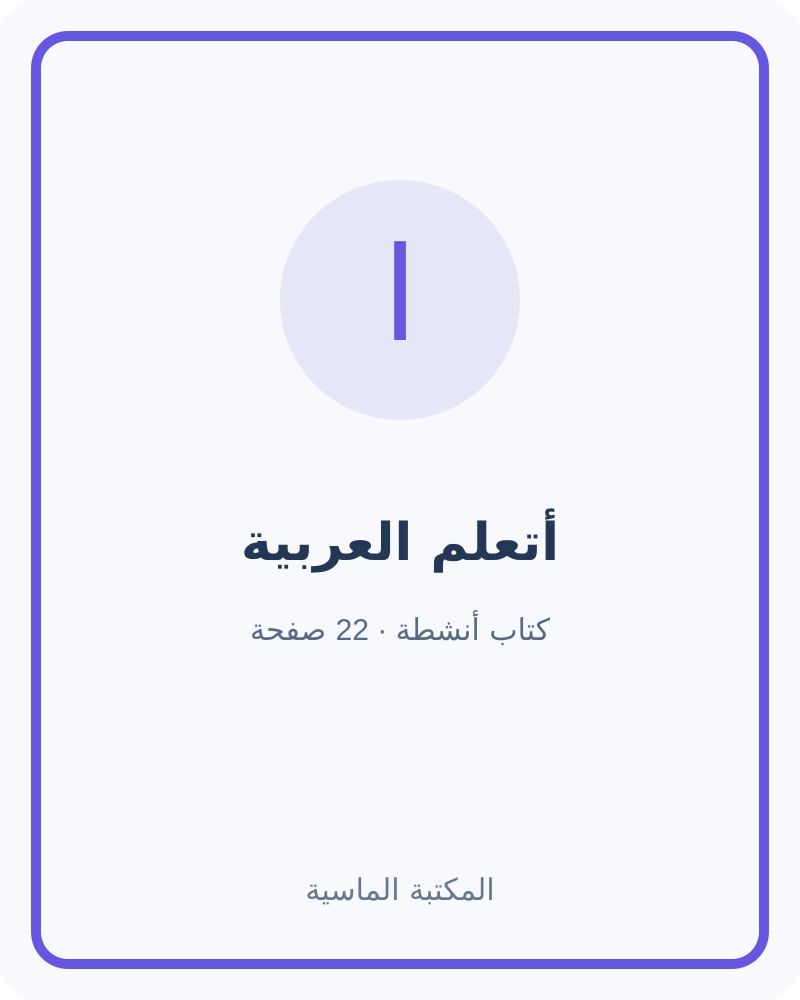
تعلم العربية · 22 صفحة · مجانيأتعلم العربية خطوة خطوة
دفتر أنشطة للتعرف إلى الحروف العربية والكلمات الأولى، مع صفحات للتتبع والرسم والمراجعة بمساعدة الأسرة.
تنزيل الكتاب مجانًا ↓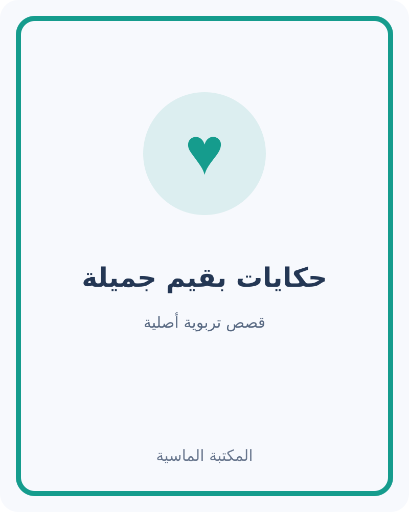
قصص وقيم · 10 صفحات · مجانيحكايات بقيم جميلة
ست حكايات خيالية أصلية عن الصدق والأمانة والرحمة والتعاون والاهتمام والصبر، مع أسئلة للحديث بعد القصة.
تنزيل القصص مجانًا ↓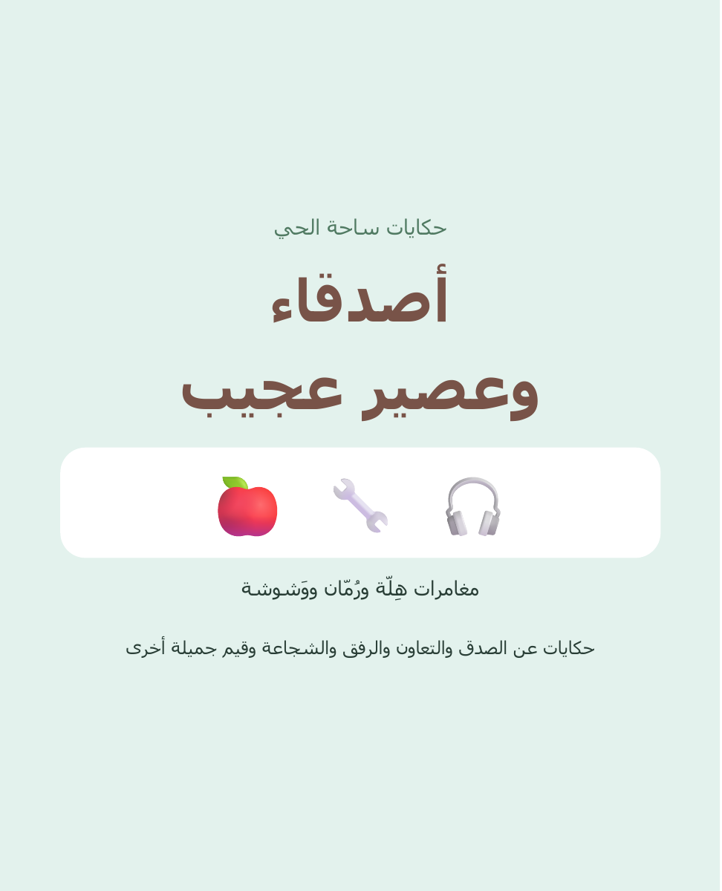
قصة عربية · 14 صفحة · مجانيةحكايات ساحة الحي: أصدقاء وعصير عجيب
قصة مصوّرة عن الصداقة والتعاون وانتظار الدور، تتبعها أسئلة ونشاط عائلي.
تنزيل القصة مجانًا ↓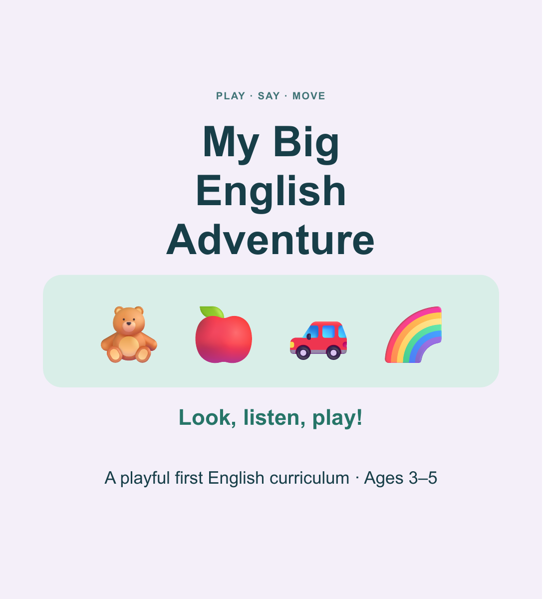
English · 39 pages · Free PDFMy Big First English Adventure
مغامرة مصوّرة للتعرّف إلى مفردات إنجليزية أولية عبر الصور والاستماع والقول والحركة. العمر المدون على الغلاف: 3–5 سنوات.
تنزيل الكتاب مجانًا ↓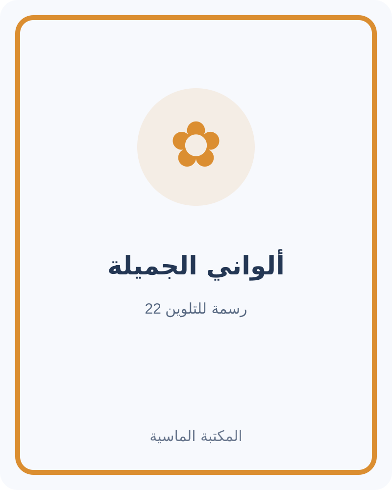
تلوين · 22 صفحة · مجانيألواني الجميلة
دفتر للطباعة يضم 21 رسمة أصلية للتلوين بالإضافة إلى الغلاف، مع مساحة يكتب فيها الطفل اسمه.
تنزيل دفتر التلوين مجانًا ↓ قصة عربية · قيم وعناية · مجاني
قصة عربية · قيم وعناية · مجانيمريم وبذرة الشرفة
قصة عربية أصلية عن الفضول والصبر والعناية بالنبات، مع أسئلة نشاط في نهاية الكتاب.
قراءة الكتاب مجانًا ←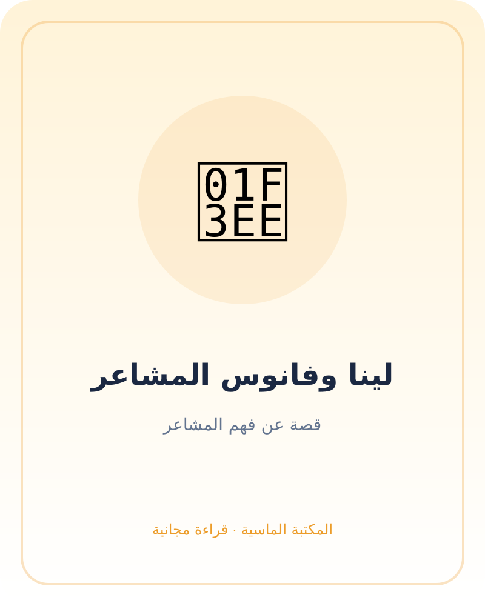
قصة عربية · المشاعر · مجانيلينا وفانوس المشاعر
حكاية لطيفة عن تسمية المشاعر والتعبير عنها باحترام وطلب المساعدة عند الحاجة.
قراءة الكتاب مجانًا ← تعلم العربية · قراءة أولى · مجاني
تعلم العربية · قراءة أولى · مجانيياسر في سوق الكلمات
كتاب قراءة مبسّط للأطفال: كلمات عربية مألوفة، جمل قصيرة، وأسئلة وأنشطة لغوية صغيرة.
قراءة الكتاب مجانًا ←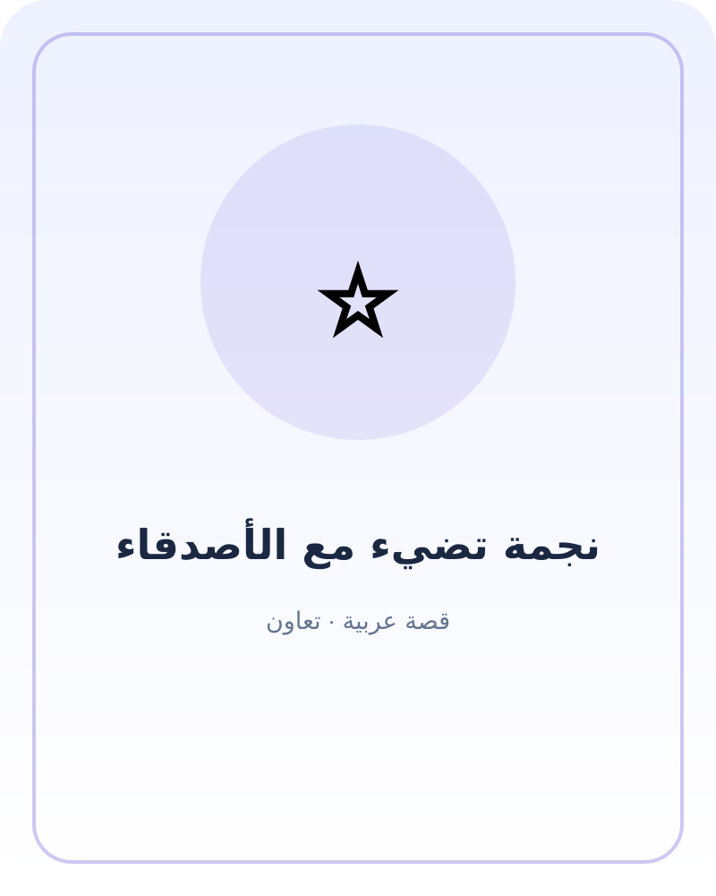
قصة عربية · تعاون · مجانينجمة تضيء مع الأصدقاء
قصة أصلية عن التعاون واختلاف المواهب وكيف ينجح الفريق عندما يستمع أفراده إلى بعضهم.
قراءة الكتاب مجانًا ←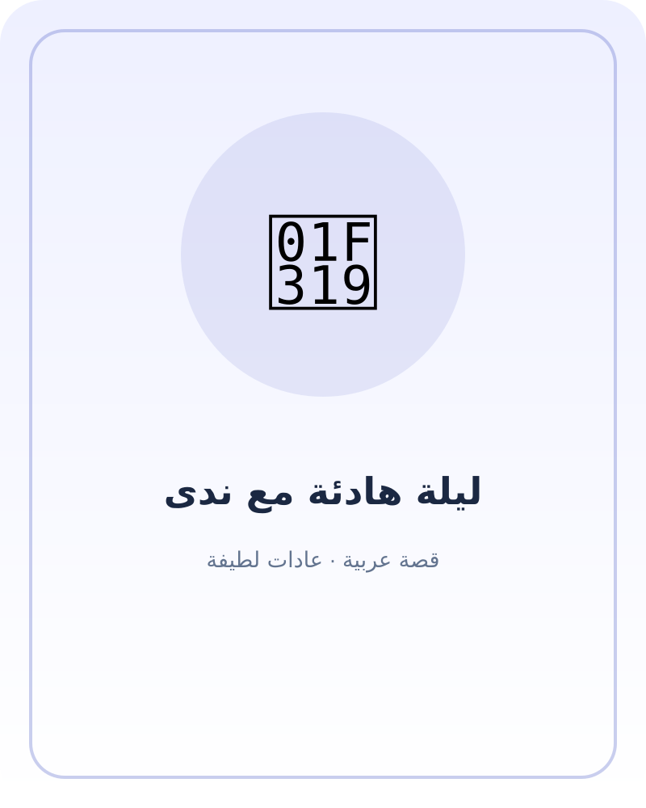
قصة عربية · عادات لطيفة · مجانيليلة هادئة مع ندى
حكاية مسائية دافئة عن ترتيب الأشياء المفضلة، والحديث عن يوم جميل، والاستعداد للنوم بهدوء.
قراءة الكتاب مجانًا ← قصة عربية · حب القراءة · مجاني
قصة عربية · حب القراءة · مجانيسارة وبطاقة المكتبة
قصة تشجع الطفل على اختيار كتاب يناسب اهتمامه، واستكشاف الصور، ومشاركة الحكاية مع الأسرة.
قراءة الكتاب مجانًا ←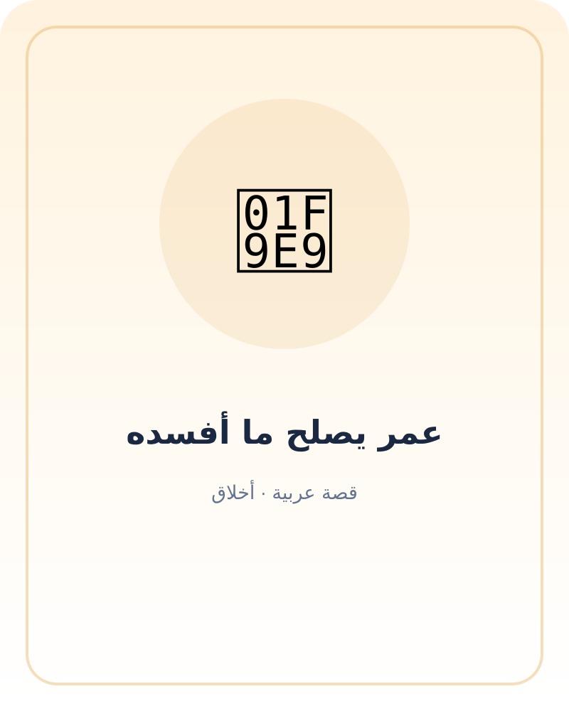
قصة عربية · أخلاق · مجانيعمر يصلح ما أفسده
قصة عن تحمل المسؤولية بعد الخطأ، والاعتذار الصادق، والبحث عن خطوة تصلح أثر التصرف.
قراءة الكتاب مجانًا ←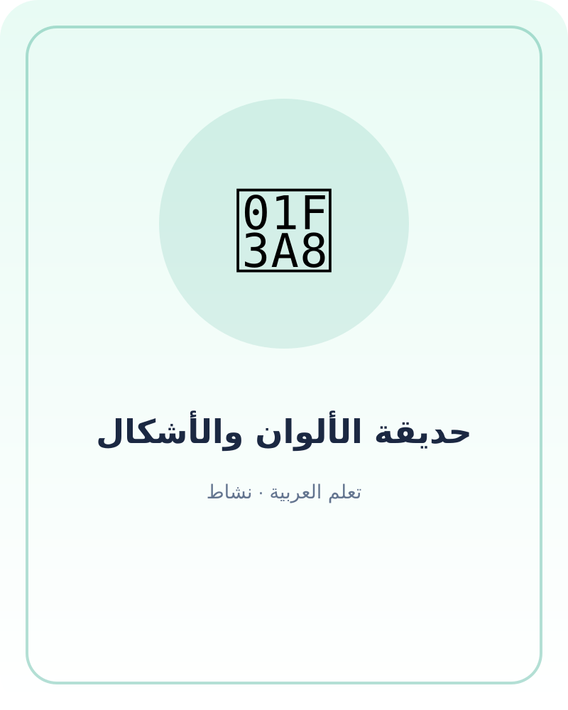
تعلم العربية · نشاط · مجانيحديقة الألوان والأشكال
كتاب نشاط مصور للقراءة مع الطفل: ألوان وأشكال ومفردات بسيطة وأسئلة للملاحظة والرسم.
قراءة الكتاب مجانًا ←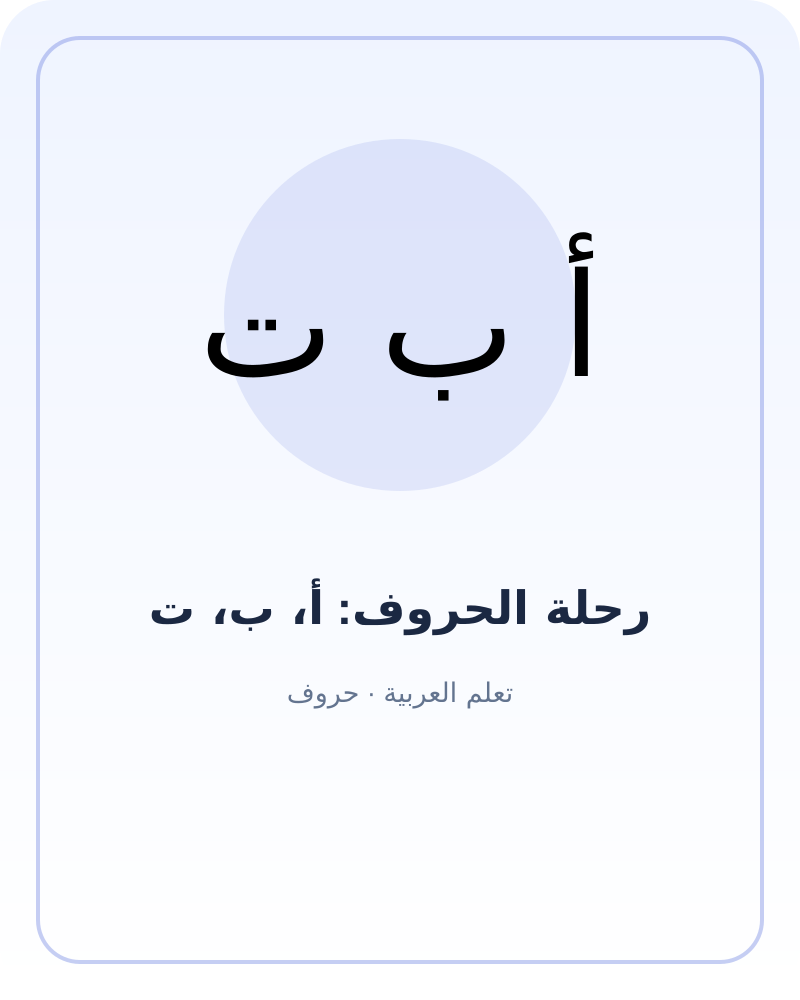
تعلم العربية · حروف · مجانيرحلة الحروف: أ، ب، ت
كتاب تمهيدي ممتع للتعرف إلى الحروف الأولى من العربية مع كلمات مألوفة وأنشطة استماع ورسم.
قراءة الكتاب مجانًا ← English · كلمات أولى · مجاني
English · كلمات أولى · مجانيMy First Everyday English Words
كتاب ثنائي اللغة للأطفال الصغار: كلمات يومية بالإنجليزية والعربية مع جمل قصيرة وأفكار لعب.
قراءة الكتاب مجانًا ←رفّ الأسرة
نكتب في قسم المقالات أدلة عملية عن القراءة والتعلم والتربية الإيجابية واحترام الآخرين، مع ذكر المصادر التي تسند المعلومات.
انتقل إلى مقالات التربية والتعليم ←مساحة آمنة للقراءة والنمو
اختيرت الكتب لتكون مناسبة للقراءة المشتركة. رافقوا الأطفال في الأنشطة، واستخدموا الأدوات والأجهزة بإشراف الكبار. القصص التربوية خيالية ولا تنسب أقوالًا إلى نصوص دينية.